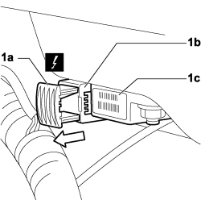
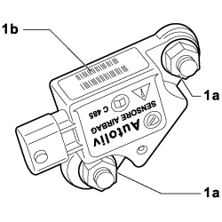

5580C10 DECELERATION SENSOR FOR AIR BAG (ONE), L/H OR R/H - R+R
- Path
- Procedures > 55 ELECTRICAL EQUIPMENT > 5580 SPECIAL ACCESSORIES > 5580C air bag system > 5580C10 DECELERATION SENSOR FOR AIR BAG (ONE), L/H OR R/H - R+R
- Kind
- repair procedure (removal / refitting; the operation number is the code)
- Applies to
- engines: 1.4 8v, 1.6 16v, 1.3 JTD 16V, 1.9 JTD 8V; all production periods
- Interactive page
- https://sloeber94.github.io/elrnDB-fDbl/en/#/223000174
Applies to: engines: 1.4 8v, 1.6 16v, 1.3 JTD 16V, 1.9 JTD 8V; production: da 12/03; only with equipment: MY 2005
 Removing
Removing
 Refitting
Refitting- Turn the ignition key to the OFF position.
- Lift the bonnet
- Disconnect the negative and positive battery terminals and insulate them.
- Wait for 10 minutes before continuing.
Description | Connector | |
|---|---|---|
BATTERY |
1. Raise the safety catch (1a) as shown in the figure and disconnect electrical connection (1b) from air bag deceleration sensor (1c).
Description | Connector | |
|---|---|---|
1b | SENSOR FOR DRIVER'S SIDE FRONT BAG |

Applies to: engines: 1.4 8v, 1.6 16v, 1.3 JTD 16V, 1.9 JTD 8V; production: da 12/03; only with equipment: MY 2005
1. Unscrew nuts (1a) securing air bag deceleration sensor (1b) and remove from the vehicle.

Applies to: engines: 1.4 8v, 1.6 16v, 1.3 JTD 16V, 1.9 JTD 8V; production: da 12/03; only with equipment: MY 2005
Refitting
Removing- Check that the Air Bag deceleration sensor is not damaged.
- Position the airbag deceleration sensor in its seat and tighten the retaining nuts.
- Connect the electrical connection to the Air Bag deceleration sensor and secure the safety catch.
Description | Connector | |
|---|---|---|
SENSOR FOR DRIVER'S SIDE FRONT BAG |
- Connect the negative and positive battery terminals.
Description | Connector | |
|---|---|---|
BATTERY |
- Check the operation of the system using the Examiner.